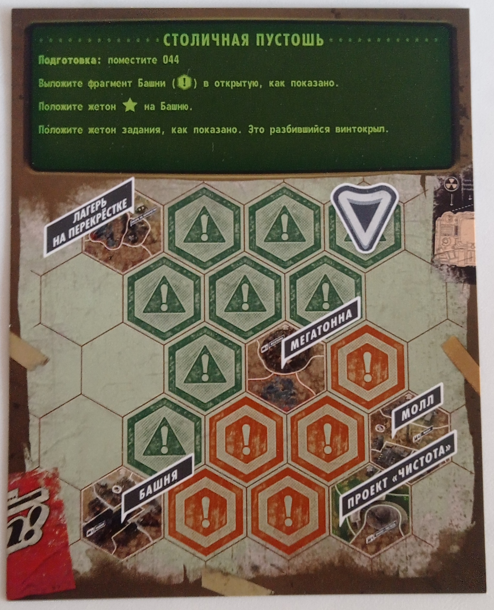
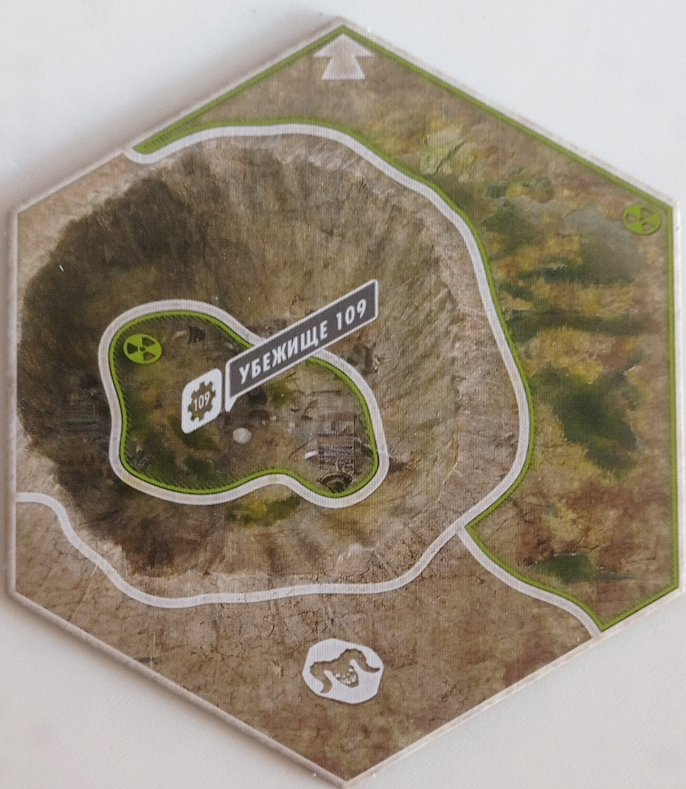
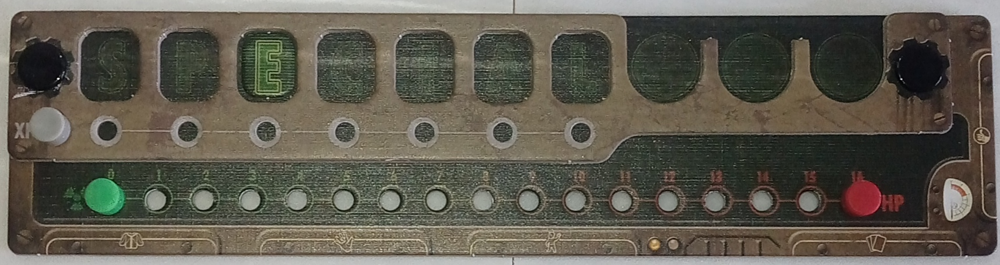
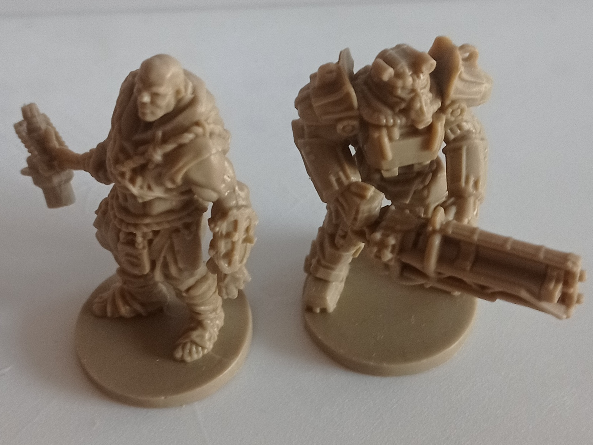
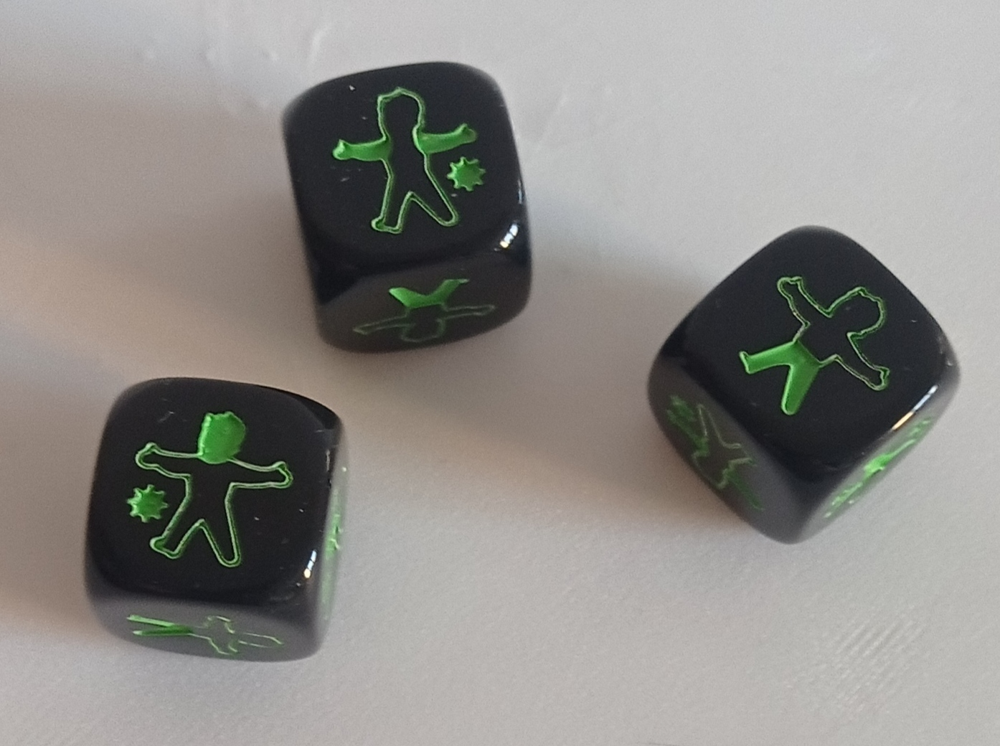
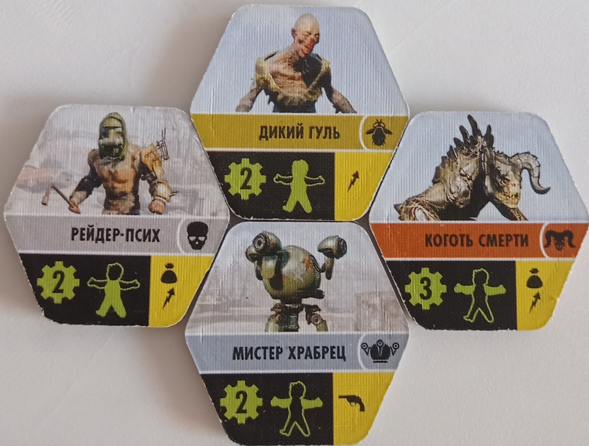
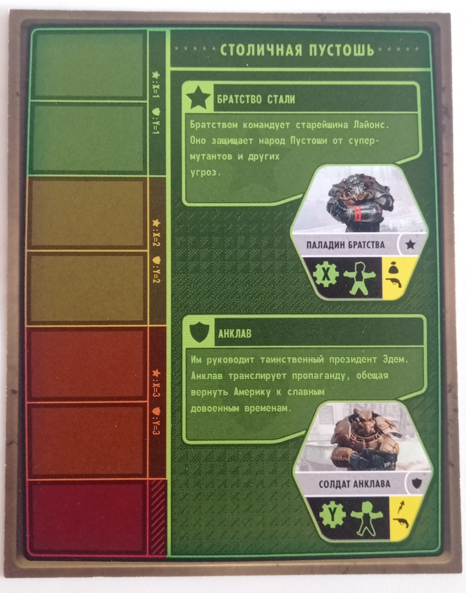

Fallout
«Fallout» — это командно-соревновательная настольная игра от 2 до 4 игроков, основанная на серии ПК-игр Fallout. По моему опыту, она, возможно, самая продуманная из всех настольных игр, представленных на этом сайте. Хоть это и не прописано в правилах, но я считаю, что для этой игры необходим специально обученный ведущий. В отличие от других игр, таких как «Серп» или «Ктулху: Смерть может умереть», где после нескольких партий игроки привыкают и им больше не требуется отдельный человек-контролёр, помогающий с правилами, в «Fallout» ведущий выполняет функцию мастера, как в D&D. Здесь десятки игровых механик, поэтому я расскажу только о наиболее важных и интересных аспектах. Хочу особенно выделить хорошо проработанную систему заданий и приключений. Помимо миссий, необходимых для продвижения по основному сценарию, существует множество второстепенных заданий. Важно отметить, что каждое такое приключение – это отдельная мини-история. Упрощённо говоря, сначала вам доступны только задачи для продвижения основной сюжетной линии, но по мере изучения игрового мира появляются побочные приключения с собственными сюжетами. Приступив к выполнению одного из таких заданий, вы не сможете завершить его мгновенно, и результат может оказаться неблагоприятным. Тем не менее, за выполнение этих задач вы получите ценные награды. Ещё одним важным аспектом является высокая степень вариативности игры. Доступны четыре различных сценария, каждый из которых включает две противоборствующие стороны. Интересный момент состоит в том, что игроки самостоятельно принимают решение, чью сторону занять по ходу игры. Таким образом, из изначальной группы участников могут сформироваться две команды, причем игрок сам решает, когда раскрыть свои предпочтения или сохранить их в тайне до окончания партии. После объявления игроком своей лояльности определённой фракции, её представители прекращают создавать препятствия. Победителем становится тот, кто наберёт максимальное количество победных очков благодаря успешному выполнению основных и дополнительных заданий. Также в игре присутствует значительное число противников, не принадлежащих ни к одной из сторон. Наконец, следует упомянуть, каким образом разработчики перенесли и адаптировали игровые механики из оригинальной компьютерной версии «Fallout». В настольную версию включены такие элементы, как Пип-Бой с системой S.P.E.C.I.A.L., боевая система и персонажи из третьей и четвёртой частей Fallout. Настольная версия чрезвычайно увлекательна и рекомендуется всем любителям жанра.
как проходит игра
Игра проходит следующим образом: после выбора сценария, персонажей и подготовки игрового поля можно начинать. Каждый игрок по очереди выполняет два действия,
ограничений на повторение действий нет. Всего существует четыре типа действий: перемещение, исследование, выполнение квеста, атака. После хода всех игроков
наступает очередь второстепенных врагов. Они приближаются к ближайшим игрокам и атакуют их, если оказываются в одной зоне. Затем снова ходят игроки. Игра
продолжается до тех пор, пока одна из фракций не наберёт необходимое количество очков влияния. После этого игроки подсчитывают свои победные очки, полученные
за выполненные задания.
элементы игры и правила
игровое поле

После выбора сценария на нём отображается игровое поле конкретного эпизода, которое необходимо собрать из областей-гексагонов. Для каждого сценария
предусмотрены несколько открытых областей, с которых начинают игроки и на которых впоследствии выполняются сюжетные задания. Остальные гексагоны
располагаются лицом вниз в произвольном порядке. Зелёные гексагоны представляют собой обычные зоны, где встречаются слабые или средние враги. Красные
гексагоны содержат сильных врагов, а также опасные и сложные для прохождения участки.

Каждая область поделена на зоны. Простые зоны ничем, кроме врагов, не усложняют передвижение. Красные зоны замедляют движение игроков. Последняя зелёная
зона одарит радиацией тех, кто в неё войдёт. На некоторых зонах расположены глобальные точки, на которых выполняются основные и побочные задания.
планшет характеристик игрока

Планшет характеристик игрока выполнен в форме Пип-Боя с системой S.P.E.C.I.A.L. Он демонстрирует снаряжение персонажа, его здоровье, количество очков опыта и
текущее состояние. Для тех, кто не знает, что такое Пип-Бой и система S.P.E.C.I.A.L.: Пип-Бой — это вымышленный портативный компьютер, который в видеоиграх
отображал характеристики персонажа, инвентарь и другие параметры. Система S.P.E.C.I.A.L. — это аббревиатура, обозначающая ключевые характеристики персонажа:
S (сила), E (выносливость), I (интеллект) и так далее. В настольной игре эти характеристики помогают пройти проверки. Проверки — это процесс, при котором игрок
бросает кубики, и выпавшие значения определяют дальнейшие события. Обычно проверки происходят при выполнении заданий. Например: персонаж споткнулся и упал со
скалы, но успел схватиться за уступ. Необходимо пройти проверку выносливости (E). Если выпадает нужное значение, персонаж заберётся обратно, если значение меньше
необходимого — персонаж упадёт и получит урон. Некоторые предметы требуют от персонажа определенные характеристики S.P.E.C.I.A.L. для использования. Например,
силовая броня требует, чтобы у персонажа было достаточно силы (S). Без этого параметра персонаж не сможет надеть эту броню.
игровые персонажи

Всего в игре пять игровых персонажей, для каждого из которых предусмотрена своя миниатюра. У каждого персонажа есть стартовый набор,
включающий две характеристики системы S.P.E.C.I.A.L., карту замысла (личное задание) и стартовую вещь или особенность. Например, Житель Пустошей
начинает игру с ломиком, позволяющим перебросить один кубик в бою, а Персонаж-Гуль обладает способностью восстанавливать здоровье при получении радиации.
Ваши персонажи могут совершать четыре основных действия:
бой
Бой вы можете начать сами, потратив действие, или же бой может инициировать ваш враг. Бой происходит путём броска трёх кубиков, результаты которых покажут,
кто и сколько урона нанёс.

На кубиках изображен силуэт человека с выделенными частями тела. Зелёным цветом отмечены места, куда вы попали. Рядом с силуэтом также видны маленькие
зелёные точки, которые показывают урон, нанесённый вам врагом. Ниже описаны враги и их уязвимости.

Враги в игре появляются на исследуемых вами территориях и представлены в виде жетонов. На этих жетонах указана следующая информация: слева находится число,
определяющее количество попаданий, необходимых для уничтожения врага, а также урон, наносимый вам врагом каждый раз, когда на кубиках рядом с силуэтом появляются
зелёные точки. Посередине жетона изображён силуэт с отмеченными уязвимыми частями тела. Чтобы нанести урон врагу, нужно, чтобы на кубиках выпали те же части тела,
что выделены у врага на жетоне. Справа указаны свойства врага. Например, если среди свойств изображён мешочек, это означает, что при убийстве этого врага вы получите
предмет. Будьте внимательны: если вы не убиваете врага за один бой, он восстанавливает своё здоровье.
стороны конфликта

В сценарии представлены две враждующие стороны, каждая из которых имеет своих уникальных врагов, с которыми вам предстоит сражаться при встрече.
Если вы заявите о своей приверженности одной из сторон, вражеские фишки этой фракции перестанут нападать на вас. На планшете сценария вы найдёте информацию
о характеристиках вражеских фишек обеих фракций, а также шкалу влияния. На этой шкале специальными жетонами отмечается уровень влияния каждой стороны. Если
влияние одной из сторон достигает максимума или разница в уровне влияния между фракциями становится значительной, игра заканчивается, и игроки начинают подсчёт
своих победных очков.
Остальные, более глубокие механики игры мы уже разберём по ходу геймплея за столом. :3